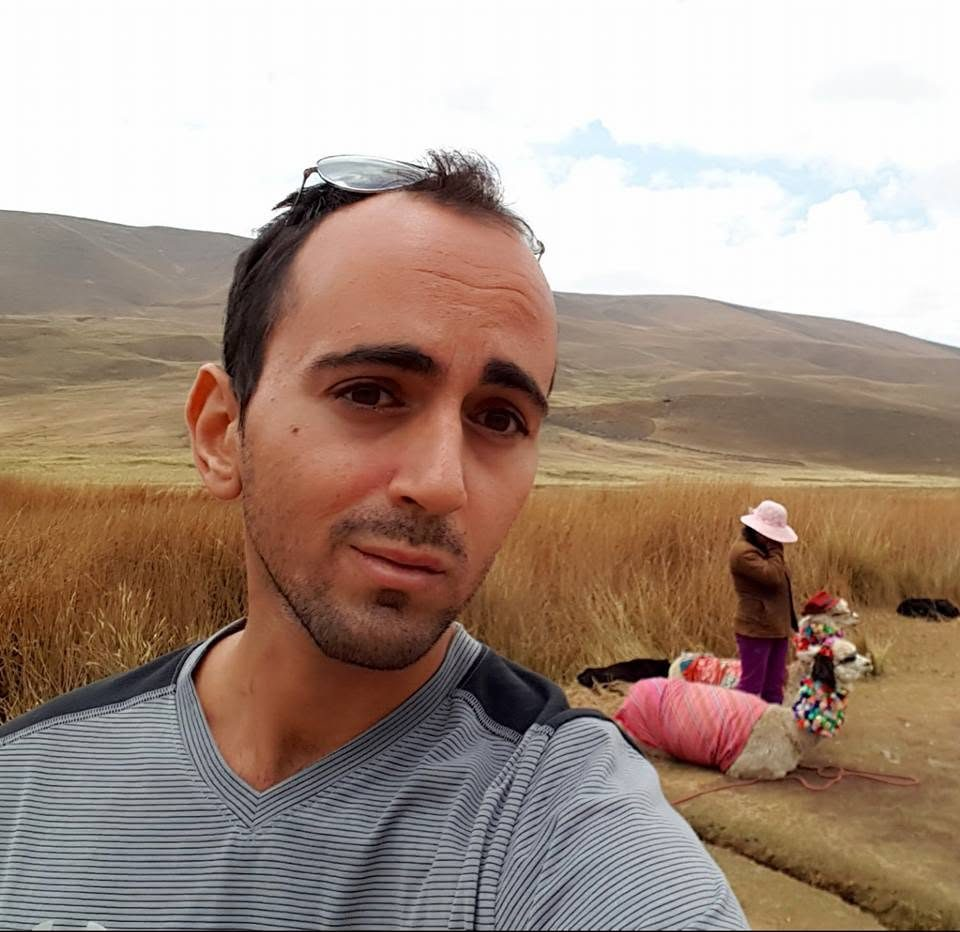
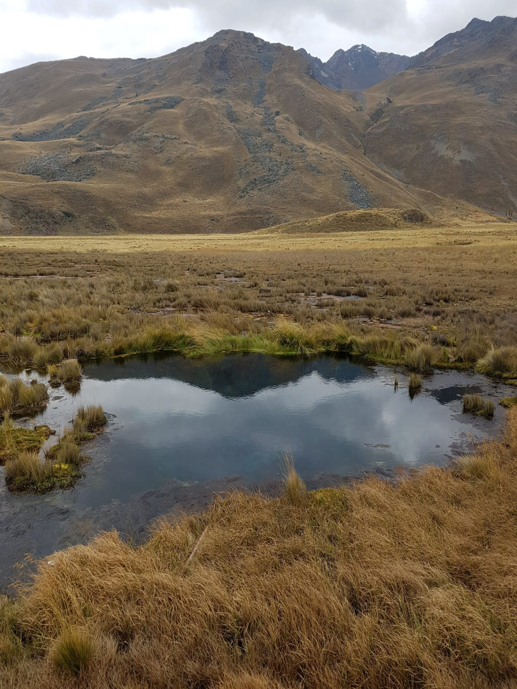
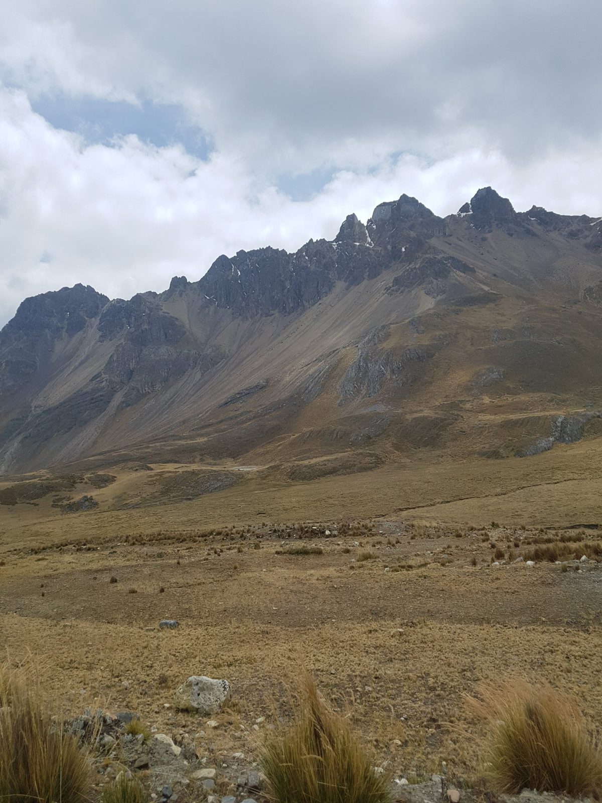
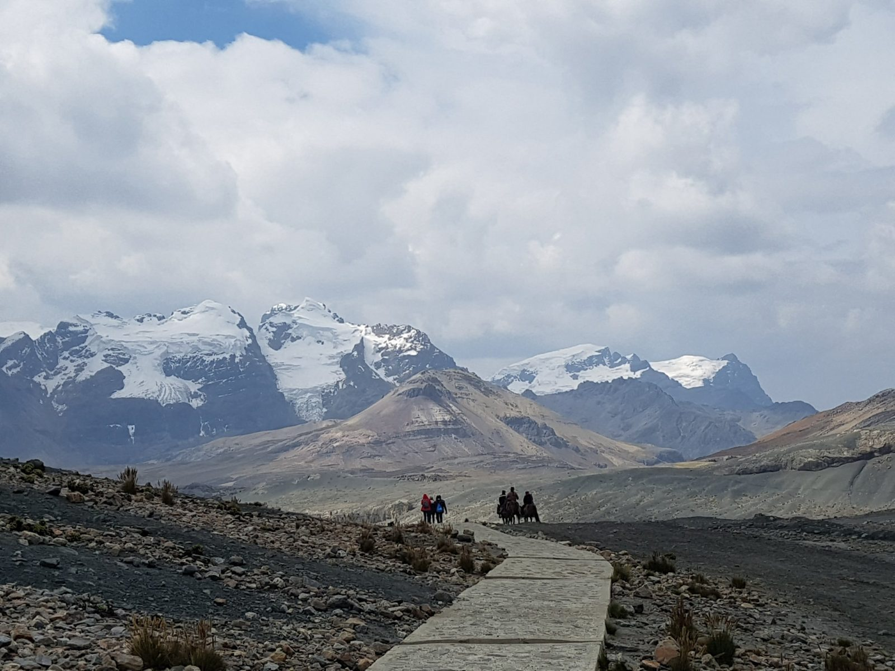
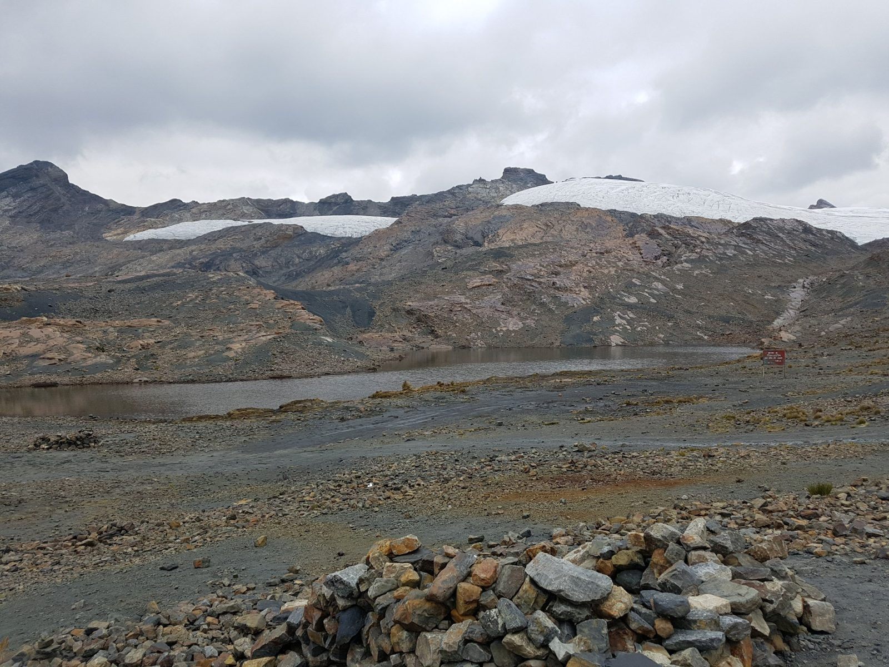
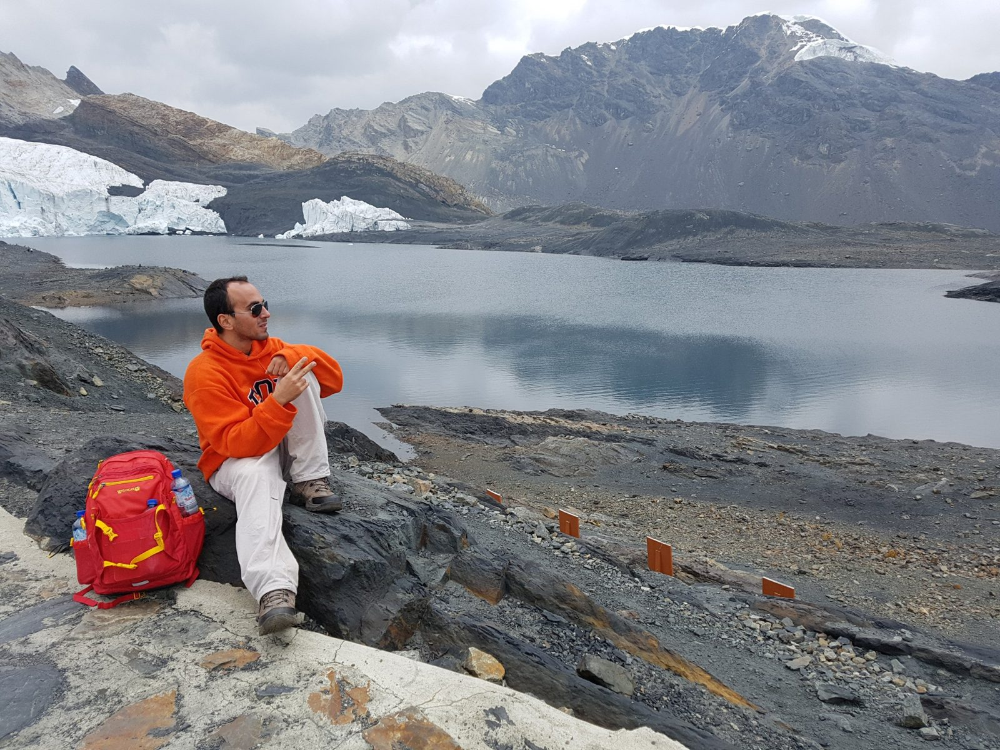
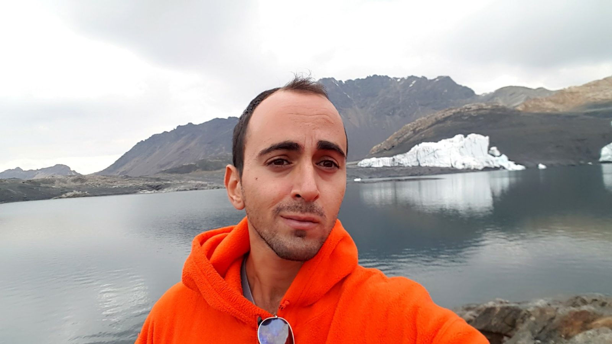
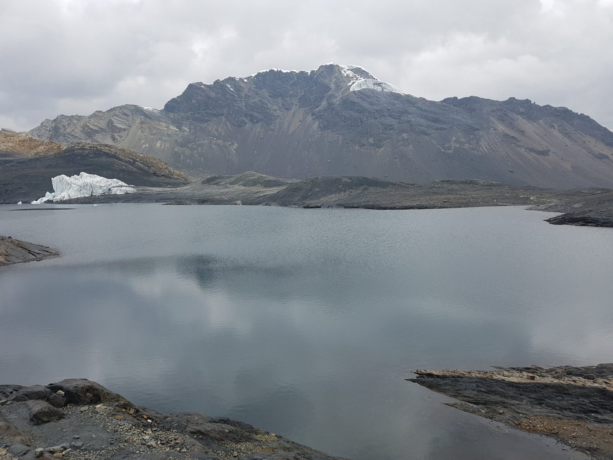
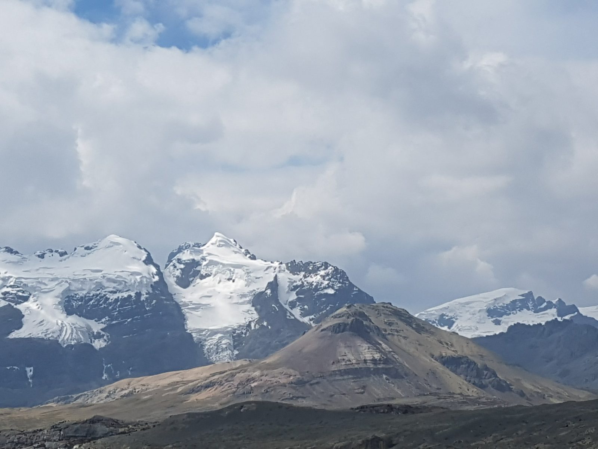

South America · Peru · Huaraz · Pastoruri
Pastoruri Glacier, September 2017
The day
I went on a full-day trip from Huaraz with an agency. Like most things in Huaraz, it is a well-worn tourist route, and there are many agencies to choose from. Nothing about the day was hard for me.
On the way up
The road climbs through high, open country. We stopped a few times along the way.



Guides describe other stops on this route, including Puya Raimondi plants and the Pumapampa plain (Laid Back Trip). I only have photos of the ones above, so I will not say which was which.
The walk to the glacier
From the end of the road, a paved path leads towards the glacier.






Then and now
I saw the glacier in 2017. It has been shrinking for decades. According to Peru's national water authority (ANA), as reported by Actualidad Ambiental in October 2024, Pastoruri lost about 60% of its ice surface between 1995 and 2016, and its front retreated about 23 metres a year between 1980 and 2019 (Actualidad Ambiental, October 30, 2024). Expect less ice than in my photos.
Tour: a group trip from Huaraz is listed at about $25 per person, with pick-up around 8:30 (Huillca Expedition). Another guide suggests 25 to 30 soles for a last-minute booking, starting at 9:00 and returning around 18:00 (Laid Back Trip). These two prices do not agree, so ask each agency what is included.
Not usually included: the park ticket (30 soles for one day for foreigners, per Trámites Perú, updated July 29, 2026), lunch (optional, about 30 soles) and horse hire for part of the path.
The walk: about 40 minutes from the end of the road to the glacier. Sources give different altitudes, from about 4,800 m at the car park to 5,000 to 5,250 m at the glacier, so plan for thin air either way.
Independent travel: one guide says there is currently no public transport to the glacier area, so the options are a tour or a private taxi. I could not find a taxi price.
Check access first: in April 2024 local authorities asked agencies to suspend trips to this sector while a damaged bridge was repaired (El Tiempo, April 12, 2024). Later reports say it reopened: more than 5,000 people visited over the Fiestas Patrias weekend in 2025 (Andina, August 8, 2025). Still, ask your agency or hostel whether the route is open on your dates.
What I would do differently
My general advice for Huaraz is to do as much as you can on your own. Pastoruri is the hard one: I went with an agency, and the guide I checked says there is no public transport to the glacier area. If you book a tour, ask exactly what is included, because the two prices above differ. The same guide suggests doing the glacier near the end of your stay, after a few days of acclimatisation.
Previous: Huaraz. Next: Laguna Parón.